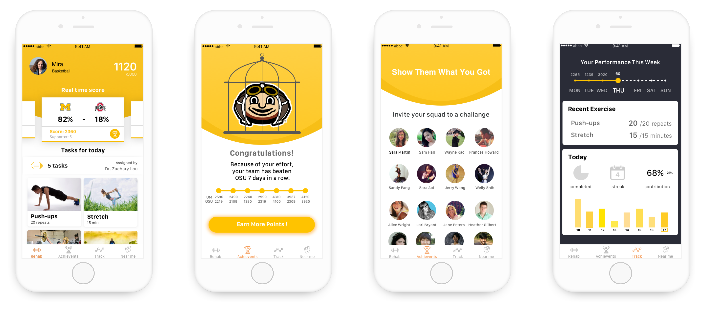
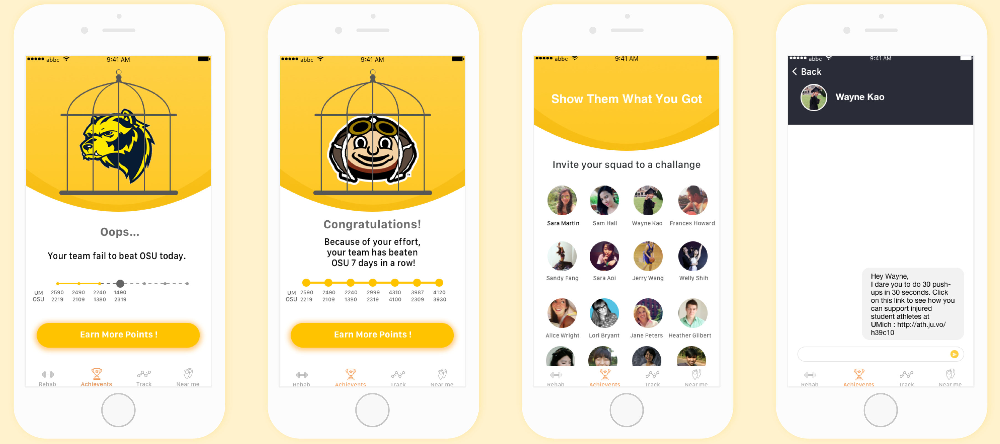

CHI 2018: AthleteJuvo
Gamify Injured Student Athlete Engagement and Support
* Honorable Mention (2nd Prize) in the
Technology/Design category at expoSItion, 2018.

Type
- Group Project
- Interaction Design
Duration
- 4 months
My Role
- UX Designer
- Project Manager
- expoSItion Presenter
What I Did
- Contextual Inquiry
- Product Design
- Design Pitch
Design Challenge
Engage and Empower Injured Student Athletes
Student-athlete life centers around team and competition. Playing sports isn't just about competing in games but it also represents a student-athlete's identity and has to do with their social lives. However, things can go wrong once they got injured -- physical injured can lead to psychological issues. Worse yet, according to the Mind, Body, and Sport handbook by NCAA, only 63% of the student-athletes indicated a willingness to ask for help from health services if they have mental health concerns.
Injured student-athletes suffer both physically and psychologically
Solution Overview
Rehab Competition & Social Support
To conquer the design challenge, we, in a team of 4, proposed AthleteJuvo, a gamification rehab app that incorporates team competition through rehabilitation exercise, social supports and visualized progress. This way, we hope to help injured student athletes regain their self identity through competition in the short run and overcome psychological as well as physical issues in the long run.
App screens of AthleteJuvo
Research
Literature Review
We started off our research process with literature reviews and identified 3 major findings that shed light our later survey, interview and design directions.
- Injury causes a great deal of stress to injured athletes.
- Social support plays a key role in an athlete's rehabilitation process.
- There are distinct social support needs associated with different phases of the rehabilitation.
Survey & Interview
Then, to understand the problems injured athletes encountered in a broader sense, we conducted an online survey and held eight semi-structured interviews, including 2 expert interviews and 6 injured athlete interviews.
Insight-Driven Design
Insight 1
Rehab exercise is repetitive and can't satisfy athletes' competitive nature.
Athletes gain sense of achievement by taking part in games. Not being able to participate in routine practice and competition lead to the loss of identity in an athlete.
First Attempt: Competition-Centered Rehab
While we cannot change the repetitive nature of rehab exercise, we came up with a gamification solution to create a competition between injured athletes. The following is a low-fi prototype that focuses on showing the performance of the rehab progress and the competition. However, during our first user test, even though users are happy with the design concept, none of them were able to tell how to start the rehab exercise.
Competition-Centered Rehab
Second Attempt: Rehab-Centered Competition
We realized that this is an affordance issue -- our rehab solution isn't rehab-friendly. Hence, we quickly went onto iterate on the design, aiming to strike a balance between rehab and competition by highlighting individual rehab progress and rehab assigned by physical therapists.
Rehab-Centered Competition
Diving Deeper: Detection
To make sure the rehab game is fair, it then came to us that we need accurate movement detection that can record and sync with AthleteJuvo. Based on our interview findings, physical therapists only provide paper-based tracking sheets for rehab tracking and there's no way for physical therapist to know whether a patient is doing their rehab or not if they don't visit the hospital routinely.
Technology Analysis
To save athletes the hassle of tracking and bridge the information gap between patients and physical therapist, we looked into current technologies available for motion tracking. We evaluate the 3 technologies based on 3 criteria:
As it turned out, while all 3 solutions could work in terms of recording body movement data, only wearable sening fabric could be carried around easily and attached to different parts of the body, allowing for more accurate senor. Therefore, we decided to incorporate wearable sensing fabric as our movement recording solution.
Insight 2
Stress stems from disconnection from the team and not knowing current status of recovery.
An athlete's daily schedule is usually team-centered and and their social network bonds with the team. Being injured forced them out of their original social circle. In additon, if injury takes longer to cure, athletes feels anxious because they are not sure if rehab is helping at all.
Solution 1: Visualize the Progress
Using wearable sensing fabric, student-athletes are able to track their completion and progress of rehab exercises without hassles.
Rehab instructions and Progress Tracking
Solution 2: Rebuild Connections
Perseverance and encouragement is an integral part of the rehab journey before recovery. Injured athletes can contribute to the team by not only finishing rehab exercise every day but also asking non-injured team mates to support them by sending out challenges, which opens a door for further coversations.
Send out challenges to non-injured teammates
Insight 3
It's hard for injured atheltes to find someone who shares similar experinece.
Solution: Meet Injured Athletes Nearby
AthleteJuvo allows injured student-athletes to message nearby athletes to meet and chat about their experience or finish their rehabilitation sessions together.
Near me
High-Fidelity Prototype Testing
For the second user test, we invited 5 more users to test the ideas and received the following feedback:
- Users like the intuitive design, simple but energetic vibe of the interface, mentioning that it makes the rehabilitation exercises more fun.
- Some of them did not know that they could get extra points by sending challenges to their non-injured teammates.
The users’ feedback confirmed that it would be better to have a clear guide or tutorials for the features.
Overall Feedback
User
I think it (AthleteJuvo) is cool because a lot of athletes struggle emotionally. When you get injuries, you are out of sport, and sport is your identity. So I think it is gaining it back and making it competitive through rehab, I like this a lot.
External Judge @CHI
In general, the work is well motivated and the process is well documented. The submission should possibly be accepted.
Internal Judge @CHI
The design research is process is systematic and sufficient, by involving the target user groups, as well as the therapists. The app design is well-crafted.
Takeaways and Reflection
Looking back, I think my team is trying to solve a lot of problems with AthleteJuvo and thus creates a fun but also complicated rehab gaming mechanism. If I were to start all over again, I would pay more attention to prioritizing the real needs of injuried student-athletes and delving into the requirements of therapuetic goals.